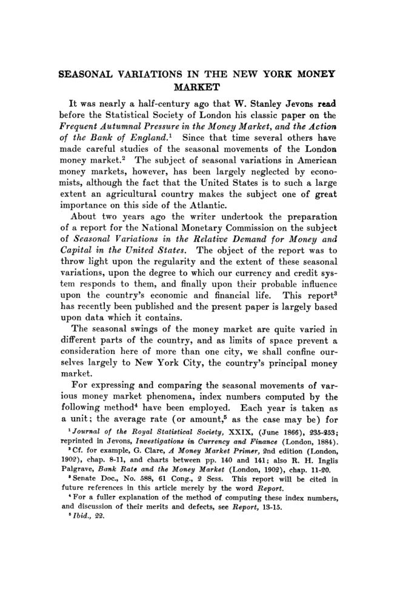

Kemmerer, 1911: as cinco estações do dinheiro em Nova York
Leitura: 8 min
Com índices semanais de 1890 a 1908, Kemmerer mostra que juros e reservas em Nova York seguiam o calendário agrícola e liga a rigidez da moeda americana a especulação, falências e pânicos.


Quase meio século antes, W. Stanley Jevons havia lido na Statistical Society de Londres um estudo sobre a pressão de outono no mercado monetário inglês. E. W. Kemmerer, de Cornell, abre seu artigo com essa lembrança para registrar uma lacuna: as variações sazonais dos mercados americanos tinham sido pouco estudadas, embora o país fosse em grande parte agrícola. Ele acabara de preparar, para a National Monetary Commission, um relatório sobre as variações sazonais da demanda relativa por moeda e capital. O artigo resume o caso de Nova York, principal mercado do país.
O método é simples e explícito. Em cada ano, a semana de taxa mais baixa recebe índice 0, a mais alta recebe 100, e as demais são proporcionais. Os índices semanais dos dezenove anos de 1890 a 1908 são então combinados por média, semana a semana. O índice mede a regularidade do movimento; para medir a amplitude, Kemmerer apresenta também as médias simples das próprias taxas e quantidades.
Quais são as cinco estações?
A primeira vai do início do ano até meados de fevereiro e é de dinheiro barato. Na média de 1890 a 1908, a taxa do call loan caiu de 6,4% na primeira semana para 2,5% na sétima. As causas são o alívio depois dos pagamentos de 1º de janeiro, a volta do dinheiro retirado para as festas e o retorno, do Oeste e do Sul, dos fundos usados para movimentar as safras, atraídos pelos 2% de juros que alguns bancos de Nova York pagavam sobre saldos de outros bancos.
A segunda é o “renascimento de primavera”, de meados de fevereiro ao início de abril. A taxa média subiu de 2,5% na sétima semana para 4% na décima quarta. Pesam o plantio, a reabertura das hidrovias ao fim do gelo, as liquidações de 1º de março e 1º de abril e a remessa de dinheiro de Nova York para a Nova Inglaterra, onde atacadistas do Oeste e do Sul pagavam os fabricantes de calçados.
A terceira é a queda do fim da primavera, seguida da calmaria de verão. A taxa média recuou de 4% para 2,5% entre a décima quarta e a vigésima quinta semana, com um repique em torno de 1º de julho, quando vencem juros e dividendos semestrais. O dinheiro voltava do Meio-Oeste depois do plantio, e o verão, período de férias e anterior às grandes safras, era descontado de antemão.
A quarta é a da movimentação das safras de outono. Da vigésima nona semana, a de dinheiro mais barato do ano, à trigésima oitava, a taxa média subiu de 2,3% para 4,3%, e as reservas caíram. Os bancos do interior sacavam os depósitos que mantinham em Nova York para financiar milho, algodão e trigo. Em agosto e setembro de 1905 a 1908, os bancos da cidade enviaram US$ 78,3 milhões ao Meio-Oeste e ao Sul.
A quinta, de outubro ao fim do ano, é a menos regular. As taxas ficam em nível alto, com muitas oscilações, e sobem em dezembro, quando se juntam o comércio de festas e os preparativos para os balanços de 1º de janeiro. Na média, a taxa da última semana chegou a 7,4%, mas o autor adverte que o número reflete poucos anos de taxas muito altas, e não uma tendência firme.
Por que as oscilações eram tão grandes?
Para Kemmerer, as estações resultam de mudanças na demanda por capital emprestável em relação à oferta. Se a oferta fosse elástica, a demanda sazonal pouco afetaria as taxas. A moeda americana crescia de ano para ano, e por sorte o acréscimo costumava vir nos últimos cinco meses, quando era mais necessário; mas quase não tinha capacidade de se contrair. O amortecedor era a moeda de depósito, os cheques, e as compensações bancárias de Nova York acompanhavam de perto as cinco estações.
“Nossa oferta de moeda é notoriamente inelástica.” (“Our money supply is notoriously inelastic.”)
Mesmo os depósitos tinham limites estreitos. Sua expansão por meio de empréstimos dependia das reservas em dinheiro, e a lei fixava exigências de reserva rígidas. Os bancos não podiam redescontar seus títulos em momentos de aperto, por falta de um banco central e pela má fama do redesconto no país. O resultado era um ajuste feito por juros e câmbio muito variáveis, remessas caras de moeda e ouro e desajustes frequentes.
Que efeitos ele atribui às estações?
Kemmerer enumera cinco. Juros e reservas instáveis encarecem os negócios e criam risco. A alternância de excesso e escassez de fundos estimula a especulação, porque o dinheiro ocioso precisa de aplicações das quais possa sair depressa. Os preços de títulos acompanham as estações: num estudo de vinte e sete títulos ferroviários, somando 898 anos-título, os preços sobem quando o mercado afrouxa e caem quando aperta. As falências comerciais aumentam no outono. E os pânicos tendem a ocorrer nas estações de aperto.
Dos oito pânicos ocorridos desde 1873, quatro foram no outono ou no início do inverno, os de 1873, 1890, 1899 e 1907, e três estouraram em maio, os de 1884, 1893 e 1901. Kemmerer resume com o velho princípio de que a corrente se rompe no elo mais fraco. A importância da agricultura, admite, sempre produzirá alguma oscilação sazonal; o problema é ter uma moeda e um crédito incapazes de acompanhá-la.
A elasticidade da moeda e do crédito, de janeiro a dezembro, é “o grande problema que está agora diante da National Monetary Commission”. (“the big problem now before the National Monetary Commission”)
Na minha leitura
Na minha leitura, o artigo vale primeiro como exercício de medição. A normalização de 0 a 100 elimina as diferenças de nível entre anos de juros altos e baixos e deixa ver o calendário comum; o próprio Kemmerer reconhece que ela apaga a amplitude e por isso publica as médias ao lado. É uma decomposição sazonal feita à mão, com a honestidade de declarar o que o método esconde, inclusive que dezembro parece mais alto por causa de poucos anos extremos.
No conteúdo, o diagnóstico é de preço de liquidez. Com oferta quase fixa de moeda e reservas, cada aumento previsível de demanda, como a safra, vira alta de juros, remessa física de dinheiro e, nos anos ruins, pânico. A solução implícita é uma fonte de liquidez que se expanda na estação e se contraia depois. É exatamente o ponto que o número seguinte da revista discutiria a propósito do plano Aldrich: como dar elasticidade sem criar uma expansão permanente do crédito.
Glossário
- Call loan
- empréstimo de prazo indeterminado, resgatável a qualquer momento, usado no financiamento de operações em bolsa; sua taxa reagia de imediato ao aperto do mercado.
- Bancos associados
- bancos membros da câmara de compensação de Nova York, cujo balanço semanal era acompanhado pelo mercado.
- Saldos de banqueiros (bankers' balances)
- depósitos que bancos do interior mantinham em bancos de Nova York, remunerados a 2% ao ano.
- Moeda de depósito
- depósitos à vista movimentados por cheque, que funcionam como meio de pagamento.
- Elasticidade da moeda
- capacidade de a oferta de moeda e crédito crescer quando a demanda aumenta e diminuir quando ela cai.
- Redesconto
- venda, por um banco, de títulos que ele descontou a outra instituição, em geral um banco central, para obter liquidez.
- Índice sazonal
- série que mostra o padrão médio de variação ao longo do ano, depois de neutralizadas as diferenças de nível entre anos.
Fontes
- Seasonal Variations in the New York Money Market — E. W. Kemmerer (Cornell University) (pp. 33–49). JSTOR · Internet Archive (PDF)
- Edição completa, com os demais artigos: Nº 112 do Arquivo.
Documento em domínio público (EUA, publicado antes de 1931), via JSTOR Early Journal Content e Internet Archive. Resumo e comentário do autor deste site, sem afiliação com a American Economic Association. Encontrou um erro? Escreva: a correção é publicada no próprio texto, com data.
← Taussig, 1911: como não se deve fazer uma tarifa ↑ Nº 112 · A primeira American Economic Review: tarifas, juros e irrigação